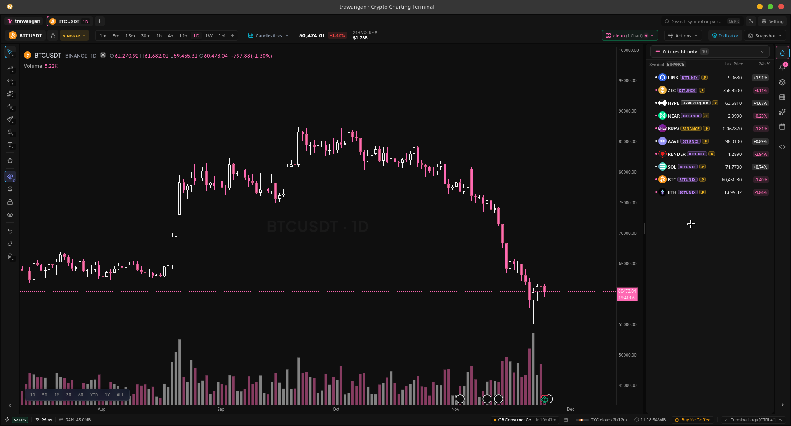
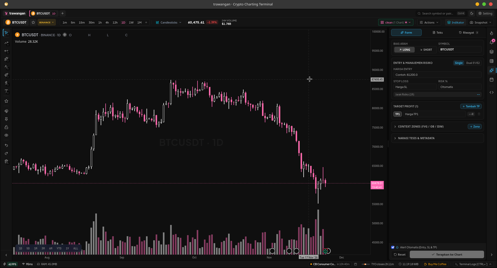
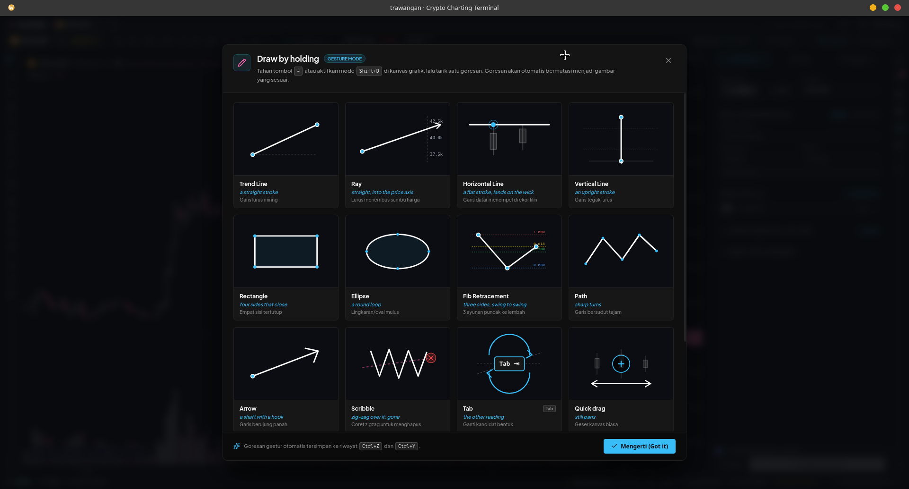
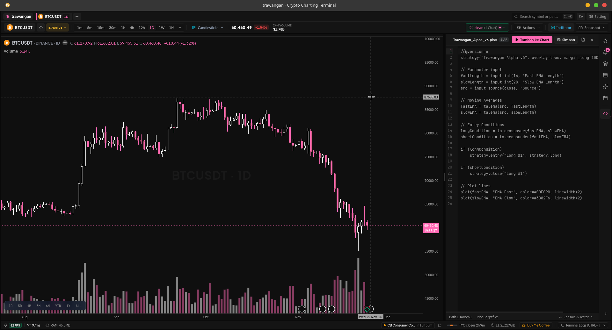
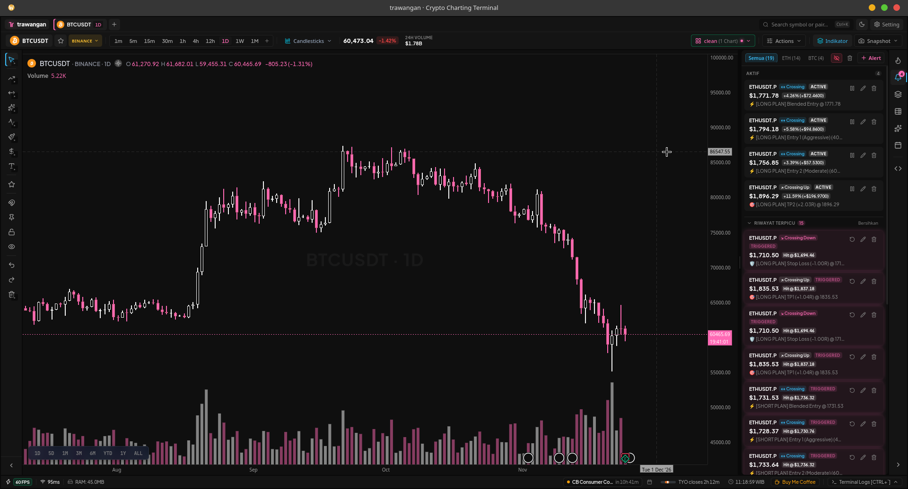
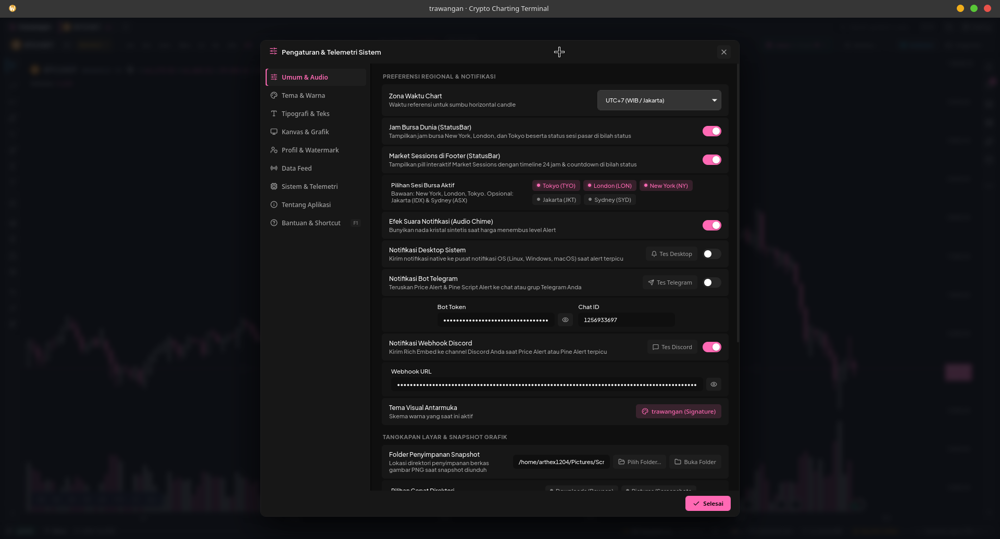
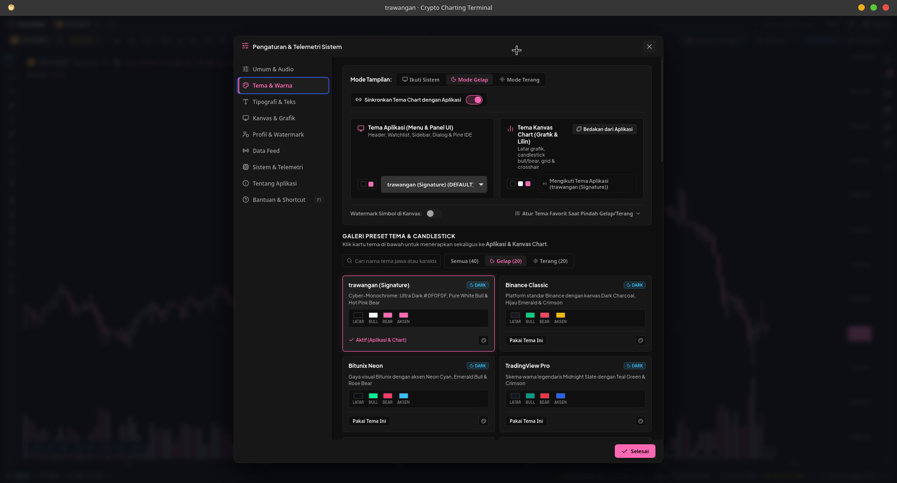

01 · Terminal Utama: Kanvas WebGL2 Vela 120 FPS dikelilingi Docked Structural Shell sing resik tanpa gangguan overlay.

02 · Multi-Watchlist Lintas Bursa: Pantau rega live kripto, saham IDX, emas COMEX, lan indeks makro rapi sejajar monospasi.

03 · Tab Trade Plan & Multi-Target Position: Sinkronisasi Preview, Form, Teks Markdown, lan Vault lengkap karo kalkulasi R-multiple otomatis.

04 · Gesture Draw by Holding: Tahan Shift+D utawa ~ kanggo nggambar bentuk teknikal kilat lan coret zig-zag kanggo mbusek.

05 · Side-by-Side Pine Script v6 IDE: Oprek indikator lan strategi kuantitatif nang CodeMirror 6 samping chart tanpa ngorbanake FPS.

06 · Price Alert & Draggable Line: Geser garis alert langsung nang chart lengkap karo notifikasi Audio Chime, Desktop, Telegram & Discord.

07 · Setelan & Telemetri Sistem: Konfigurasi basa, zona waktu, jam bursa dunia, snapshot Ultra HD, lan gerbang Opt-In Broker Bridge.

08 · Dual-Theme Decoupling & 37 Preset Tema: Pisahno tema aplikasi teko tema kanvas chart kanthi 31 tema budaya Jawa, Warta Abang, lan Studio 9D.